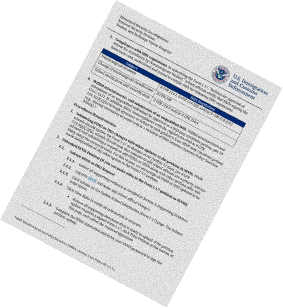
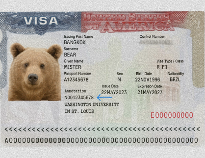
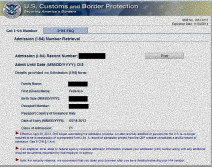
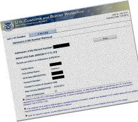
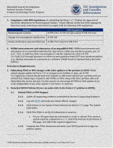
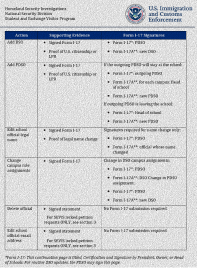
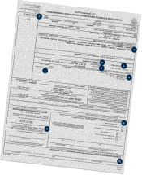
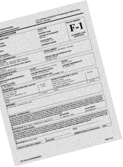
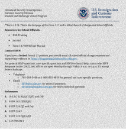
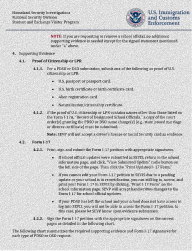
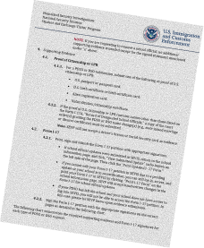
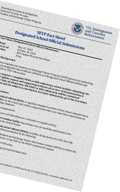
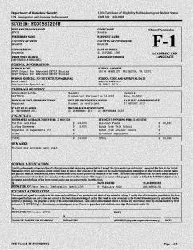
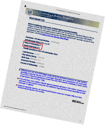
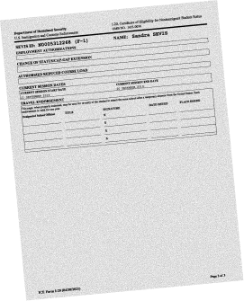
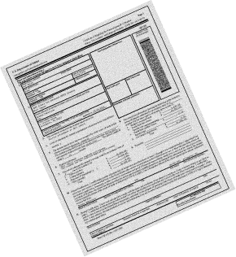
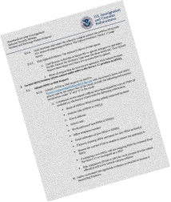
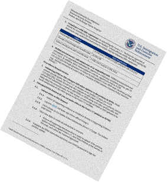
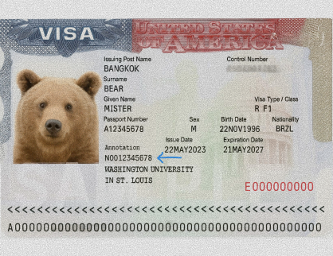
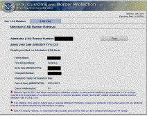
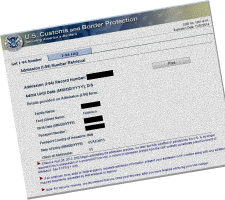
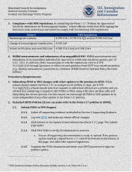
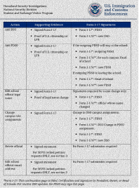
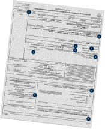
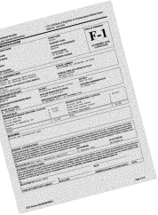
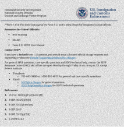
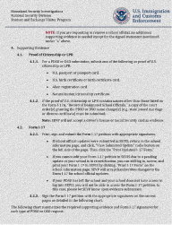
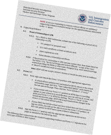
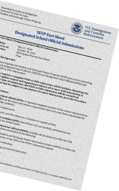
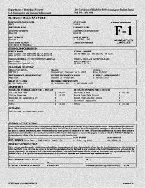
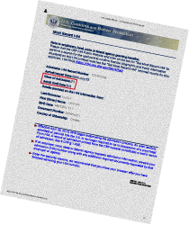
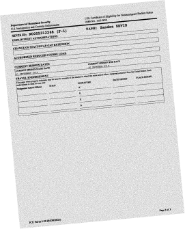
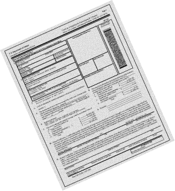
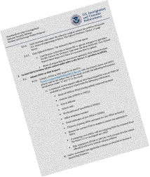

US VISA Curbs On International Students May Hurt Colleges
Molly Chen had a dream: earn a law degree from a US university and pass the bar exam there.
After completing her bachelor’s degree in law from Macau University of Science and Technology in China, she was
highly motivated to pursue her American dream by applying to nearly a dozen schools for her master's.
Eight of them offered her admission, and she decided to pick Washington University, St. Louis, which offered her
a lot of scholarship. Her excitement turned to frustration after she could not get a visa interview date for
weeks.
Classes began in August, and as of October, Chen still could not secure a visa interview date, much to the
consternation of her parents, who had urged her to give up on applying to the US and consider the UK, Australia,
or the Netherlands instead.
“I just wanted to pass the bar exam in the United States. I never expected that even after receiving offers, I
still could not get a visa slot,” Chen said.
She stopped checking in the middle of September after about two months since she was expected to resume.
“If I arrived in late September or October, other students would already have their social circles, and their
relationships with professors would already be deeper. The gap was too big,” she said.
Chen is among the international students who could not travel to the U.S. this fall, with the overall enrolment
of international students on American campuses — including students who started in prior years — declining by 1%
from last academic year, according to the Institute of International Education’s (IIE) Open Doors reports and
the Fall 2025 snapshot report.
New enrollments, a subset of total enrollments, decreased by 17% for international students studying at their
college or university for the first time.

Approximately 57% of institutions surveyed report a decrease in new international enrollment, 14% indicate
stable numbers, and 29% note an increase.
The decline is occurring as the Trump administration sought to curb the enrollment of college students through
delayed visa processing, travel bans or restrictions for 19 countries, deportation of international students
for pro-Palestinian speech, and heightened vetting of student visa applicants.
Among U.S. institutions reporting declines in new enrollments, colleges and universities cite multiple contributing factors, including 96 percent citing visa application concerns and 68 percent citing travel restrictions, according to the report.

The economic burden of losing international students would be felt by colleges across the U.S., with a handful
of
blue states being the most vulnerable to sudden drops, Dick Startz, a professor of economics at the University
of
California, Santa Barbara, said.
Even as they accounted for only 6 percent of the student population in the U.S., international students
contributed about $43 billion to the US economy and supported 355,736 jobs last year. This is expected to fall
by
$1.1 billion, according to NAFSA: Association of International Educators, a nonprofit dedicated to international
education.
“Although international students make up a minority of U.S. college enrollment, their disproportionate financial
contribution, especially through higher tuition payments, means that visa restrictions or enrollment declines
pose
a significant threat to many institutions’ budgets,” Startz, who analyzes trends in higher education, said.
He noted that colleges most vulnerable to international enrollment drops tend to be small, private institutions
with a specialized focus or affiliated with a Christian church.

The United States has the highest number of international students of any country, with about 1.3 million
doctoral, master’s, bachelor’s, and associate students, according to government data.
Over 70 percent of them are from Asia, the majority from India and China. This year, the number of Asian
students arriving in the U.S. in August fell by 24 percent — the lowest August numbers on record outside of the
pandemic.
Nearly one in three U.S. international students is Indian, but the number has been declining. This fall, it
dropped by an additional 44 percent as a result of prolonged delays in processing student visas.
Like Chen from China, Nishita Jagati from India was preparing to enroll in a student exchange program in the
U.S. this year when the visa application portal was suspended. She waited and hoped the visa restriction would
be loosened after a while, but it went on for months. So she stopped waiting.
“I don’t think I can take on the kind of pressure that comes with being in the U.S. After hearing about the
restrictions and waiting for visa appointments to reopen, I changed my mind and started exploring alternatives,”
she said.
Her experience mirrors a growing frustration among prospective international students who are mired by delayed
visa appointments, sudden policy changes, and increased scrutiny during interviews, causing some to look
elsewhere to further their studies.
This was the case of Klein Hu, another student from China. After completing his master's program at Columbia
University, he wanted to continue his doctoral studies at a university in the U.S. He applied to several
institutions, including the University of North Carolina at Chapel Hill, Syracuse University, and Boston
University. However, some of the schools told him that they no longer had stable funding available for
international students.
Cresfallen, he decided to return home. It was then that he saw a post from some universities in Hong Kong that
was wooing talented students rejected by US schools. He got in despite applying late.
The Chinese University of Hong Kong offered him a joint PhD program in computational social science and
communication and media at the University of Hong Kong (HKU).
Despite having a job at tech giant Tencent, he wanted to do academic research in the future and work in
academia. So I decided to apply for a PhD directly rather than continue working. My goal is to become a
professor and continue doing research after graduation.
The shift happened because of the sudden policy changes in the U.S. under the Trump administration. Funding for
international students became unstable, and visa prospects became uncertain. I didn’t want to waste another year
and wait again. Hong Kong is also closer to my hometown and more convenient than flying 19-20 hours from New
York every time.
“Choosing Hong Kong doesn’t mean I lose the chance to go back to the U.S. for conferences or a future postdoc,
so I feel optimistic about my path.”